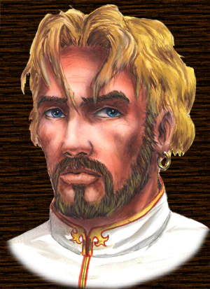
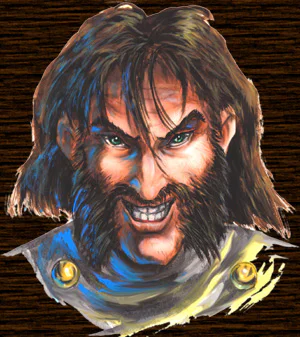

| ! Локальная версия Web сайта от 10 октября ! | Ссылка на действующий web-сайт(www.snowball.ru) |
|---|
 |
Один из самых
отважных героев, Всеслав Чародей из клана
Северного Острова уже давно выбрал своим домом
долину славного русского города Дедославля. Несмотря на прошедшие столетия, Всеслав остался верен древней клятве Титанов и продолжает исправно охранять порученный его заботам поющий клинок Турим Ваала. Вместе с несколькими другими героями своего клана Всеслав является одним из легендарных воинов-хранителей Круга Пятерых. За пролетевшие годы многие герои разбитых кланов пытался пробить оборону Круга и овладеть оставленными Титанами поющими вещами, однако ни один не смог преодолеть защиту, выставленную Всеславом Чародеем. Да и кому, как не Всеславу знать всю опасность магических предметов, способных в мгновение ока подчинять слабые души своих владельцев, превращая грозных варваров в жалких марионеток Судьбы? |
| Драгомир Воин,
суровый варвар некогда могущественного, а ныне
забытого клана Черного Облака, похоронил клятву
верности Титанам вместе со своими друзьями,
погибшими при защите величавых замков Равнины
Грез. Всю энергию Драгомир обратил на создание своего собственного клана, яростно атакуя каждого, кто рискует встать на его пути к заветной мечте. Одержав победу над Арром Наблюдателем, одним из Хранителей Круга Пятерых, Драгомир сумел собрать некогда разбитый Амулет Дракона и вырвать у Арра Керр Домм, давно забытый Браслет Власти клана Северного Острова. Казалось бы, теперь ничто не сможет остановить Драгомира на его пути к следующей поющей вещи: заветному Туриму Ваалу. Ничто и никто, кроме Всеслава Чародея. Героя, верного своей клятве... |
 |
| (в течение следующих двух недель мы постараемся представить вам других персонажей «Всеслава» и ближе познакомить с замечательной деревянной архитектурой игры) |
Текст и
иллюстрации (c) 1997 Snowball Interactive Entertainment, Inc. |